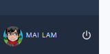

Organization settings¶
Organizations¶
An organization is always required for institutional teaching. The Organization page includes settings for managing accounts, LMS integration and many other organization related settings.
The person who creates the organization in Codio is the owner and is given the administrator role. Anyone with Admin permissions can perform the following tasks:
To access the Organizations page, follow these steps:
Click your profile icon in the lower left corner of the screen.

In the Organizations area, click the name of your organization.
Organization Owners¶
Organization owners can add other owners to an organization and view all members in the organization. They can also add themselves as teachers to any course.
The following Codio features are only accessible to Organization owners:
Overview - Update organization profile, enable or disable the ability to create public objects, enable or disable Codio support access, obtain invitation token, manage education settings, and delete the organization.
Members - View, add, and remove users in your organization and invite teachers to the organization.
Billing - View your Codio plan information.
Rubrics - Create and manage your grading templates.
Dashboard - Specify the Student Dashboard default page (My Projects or Courses), and specify whether to hide/show Courses.
IP Consent - Enable or disable IP Consent and manage the versions.
Custom Scripts - Manage custom scripts used to integrate third-party systems to help and track students.
Extensions - Add and enable custom extensions for the organization.
LTI Integrations - Specify and manage LTI integration settings.
Integrations - Specify API key for Sense.Network integration, and add other API integrations.
Assessment Libraries - Create and manage assessment libraries for your organization.
LLMs - Specify API keys for LLM models or add a custom LLM provider.